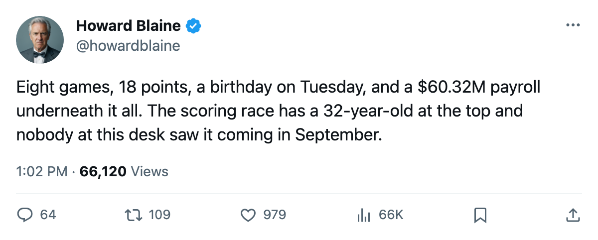
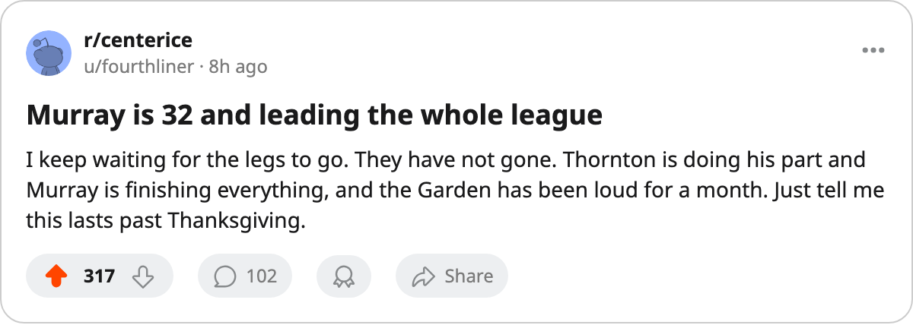

ANA
ANAScoring Race: Glen Murray Leads the League at 32, and Boston's Top Two Sit 1 and 2
Murray has 18 points in 8 games and turns 33 on November 1, on a club whose $60.32M payroll ranks 10th and whose streak has reached 5.
 Howard BlaineSenior writer, The Blaine Rankings · The Hockey Gazette
Howard BlaineSenior writer, The Blaine Rankings · The Hockey Gazette
 Glen Murray81 has 18 points in 8 games, the most in the league, and the
Glen Murray81 has 18 points in 8 games, the most in the league, and the  Boston Bruins Bruins have won 5 in a row.
Boston Bruins Bruins have won 5 in a row.
He is 32 and turns 33 on November 1, arriving there to lead the scoring race on a club that sits 3rd in the East with 13 points, from fewer games than either club above it. Toronto has 16 points in 10 games and the Rangers 14 in 10. Boston has played 8 and has banked 13.
| player | pos | gp | g | a | pts | pace | mpg | Book |
|---|---|---|---|---|---|---|---|---|
| Glen Murray | RW | 8 | 7 | 11 | 18 | 184 | 22.9 | 85 |
 Joe Thornton86 Joe Thornton86 | C | 8 | 10 | 5 | 15 | 154 | 24.0 | 90 |
 Martin Lapointe74 Martin Lapointe74 | RW | 8 | 1 | 10 | 11 | 113 | 21.8 | 78 |
The pace column is the Bureau's projection over 82 games, and Murray's 184 is the best in the league. Nobody at this desk treats an October pace as a record. The points are real, the games are real, and Boston's have come at a rate no other club in the East has matched over the same number of nights.
Two names and a mid-table payroll
Boston's payroll is $60.32M, 10th in the league, and its 13 points have cost $4.64M each. The building is not carrying the club: 15,105 people a night, and a ticket at $79.
Thornton is 26 and the Book has him at 90. He has 10 goals and 5 assists and plays 24.0 minutes a night to Murray's 22.9, and 11 of Murray's 18 points are assists, the wing feeding off the center as much as the center off the wing. The two of them have been the whole top of the Boston board; Lapointe's 11 points are the third name and then the column ends.
The streak has a division underneath it. Boston is unbeaten inside the Northeast, 7 goals for and 5 against in 2 games, with a win over Toronto and an overtime win over Ottawa. The road record is 4-2 and the home record 2-0.
The man who leads it
Murray went 18th overall in the 1991 draft. Five years with the Kings followed, and on October 24, 2001 Boston re-acquired him with Jozef Stümpel for Jason Allison and Mikko Eloranta. He signed a two-year contract in July 2002 and answered with his best season, 92 points on 44 goals and 48 assists, and a place in the 2003 All-Star Game.
The last season the record holds at length is 2003-04: 48 games, 27 goals, 37 assists, 64 points, 22.9 minutes a night. He played 6 games that spring and scored 7 points.
The Book grades him 85 overall today, with endurance at 98 and durability at 51. He is 32, the contract has 3 years to run, and it pays $7.15M.
What the week asks
Boston plays at Washington on October 30, the first meeting of the season between the clubs. The  Washington Capitals Capitals have 4 points from 8 games and have lost 3 in a row. Anaheim visits on October 31 and the
Washington Capitals Capitals have 4 points from 8 games and have lost 3 in a row. Anaheim visits on October 31 and the  New York Rangers Rangers on November 2, and the league's calendar has nothing in between but the ordinary business of a Tuesday.
New York Rangers Rangers on November 2, and the league's calendar has nothing in between but the ordinary business of a Tuesday.
That Tuesday is Murray's 33rd birthday, falling on the day between the Anaheim and Rangers games, with the scoring lead in his pocket and the season three weeks old.

